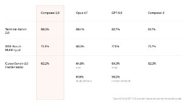
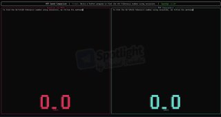
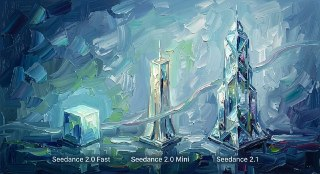
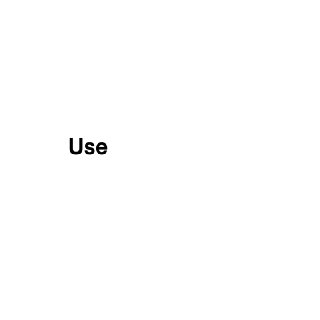
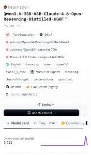
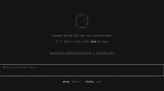

WIREDנמוכה20.05.2026, 00:00
The CEO of Google DeepMind tells WIRED that companies should use the productivity gains of AI to do more, not lay people off.
אימות 1
The CEO of Google DeepMind tells WIRED that companies should use the productivity gains of AI to do more, not lay people off.
The ex-employees, who cofounded a new AI watchdog group, say investors deserve more information about xAI’s safety practices before SpaceX goes public.
גוגל חשפה בוועידת המפתחים משקפי AI שפותחו עם סמסונג, וורבי פרקר וג'נטל מונסטר, בשתי גרסאות: עם שמע או עם מסך. במקביל הציגה את ג'מיני 3.5 פלאש ואת השינוי הגדול ביותר לדבריה בתיבת החיפוש מאז הקמתה.
Google is sprucing up its Gemini models, revamping search, and enabling AI agents in everything. There are also some spiffy new smart glasses coming this fall.

OpenAI איפסה שוב את מגבלות השימוש בקודקס לכל המנויים, לאחר שחלק מהמשתמשים דיווחו על ירידה בביצועי GPT-5.5 בימים האחרונים.
לא גם את היכולת לעבוד עם AI. כלומר, איך אתם עושים פרומפטינג, איך אתם בודקים את התשובות ואיך אתם מתקנים את התוצאות של המודל. מה שמפתיע הוא שיחלקו אסיסטנטים כאלה אפילו לג'וניורים! כל זה קורה כי בתוך Google, כל המפתחים הם כבר "Vibecoders" פעילים.

Cursor השיקה את Composer 2.5, מודל קוד עצמאי שמבוסס על Kimi K2.5 וזמין כבר בעורך. החברה מציגה שיפור במשימות ארוכות, בהבנת הוראות מורכבות ובעבודה שיתופית, לצד תמחור לפי טוקנים והכפלת מכסת השימוש בשבוע ההשקה.

י אחרי זה קלוד פשוט לא עוקב. לא בכוונה, זו ההתנהגות שלו. טיפ: אפשר למקם את הקובץ הזה ב-3 מקומות שונים שיש להם תפקיד שונה: 1. כחוק כללי לכל הפרויקטים מעתה והלאה 2. כחוק לפרויקט ספציפי שמשתפים עם צוות שעובד עם git 3.

מודל Gemma 4 עודכן במנגנון שמייצר כמה טוקנים במקביל במקום בזה אחר זה, מה שאמור להאיץ את התשובות עד פי 3 בלי לפגוע באיכות או ברמת היכולת של המודל.

פרויקט Human Operator של MIT מציג אבטיפוס לביש שמתרגם קלט חזותי וקולי לפקודות EMS, וכך מאפשר ל-AI להניע זמנית את היד ופרק כף היד של המשתמש.
במקביל נטען כי לאחר תקלה בביצועי GPT 5.5 אופסו מגבלות השימוש בקודקס לכל המנויים.

שמח לשתף שהתחלתי להגיש את ״פינת ה-AI״ במהדורת היום של חדשות 12 עם עמליה דואק ועופר חדד! מדי חמישי ניפגש על המסך (בלי נדר בעזרת השם) - ונדבר על יוז קייסים פרקטיים וכיפיים - שמתאימים לכל אחת ואחת!

Seedance צפויה להשיק בקרוב את גרסאות 2.1 ו-2.0 Mini: הראשונה מבטיחה שיפור של כ-20% באיכות הג׳נרוט, והשנייה אמורה להציע מודל קל ומהיר יותר מ-2.0 Fast במחיר של כ-0.27 ש״ח לשנייה.
זו בעיקר הדגמה קלילה לדרך שבה כלי AI מפרשים מראה אישי דרך הומור, סגנון ואסתטיקת סקצ'בוק.

לקוח שתכנן חריטה לטבעת בעזרת AI מספר שקלוד המיר את העיצוב לקובץ שהתאים לתוכנת הצורף, וחסך שעות של עבודה ידנית.

בפינת AI שבועית הוצגו שימושים פרקטיים להורים: יצירת סיפורי השלכה, משחקים, חוברות תרגול וצביעה וספרי ילדים שמסייעים בחיזוק מיומנויות אצל ילדים.

שליטה מרחוק בקודקס זמינה כעת דרך אפליקציית ChatGPT לנייד באייפון ובאנדרואיד.
ידעתם שסידאנס יודע לקבל סרטונים תמונות ואפילו אודיו - ולשלב הכל ביחד עם AI? פה העליתי סרטון אמיתי מהרחפן ותמונה אמיתית של צ׳יטה - וסידאנס יצר לי אותה רצה בווידאו האמיתי!

הפוסט מציג טענת "חינם", אבל בלי אימות ברור מול המוצר הרשמי, ולכן צריך לראות בזה טענה שדורשת בדיקה.
הפוסט מציג טענת "חינם", אבל בלי אימות ברור מול המוצר הרשמי, ולכן צריך לראות בזה טענה שדורשת בדיקה.

תנועה מרשימות בקוד פתוח. המודל מתאים במיוחד למי שמחפש אלטרנטיבה חזקה וגמישה ליצירת סרטוני AI ישירות מהמחשב (לבעלי כרטיסי מסך חזקים 😉). 🔗 קישור למודל ב-Hugging Face:

הפוסט מציג טענת "חינם", אבל בלי אימות ברור מול המוצר הרשמי, ולכן צריך לראות בזה טענה שדורשת בדיקה.

הפוסט מציג טענת "חינם", אבל בלי אימות ברור מול המוצר הרשמי, ולכן צריך לראות בזה טענה שדורשת בדיקה.
הנה אב-טיפוס UX מגניב עבור גלריית תמונות מבוססת AI, הייתם משתמשים בזה? ☕️ #UX #בינהמלאכותית @technewsheb
הניסוח הזהיר יותר הוא: משרד החוץ הודיע כי חיל הים השלים את ההשתלטות על כל סירות המשט הטורקי לעזה, ו-430 הפעילים הועברו לכלי שיט ישראליים בדרכם לישראל ולמפגש עם נציגים קונסולריים.
הניסוח הזהיר יותר הוא: לפי דיווח בניו יורק טיימס, ישראל וארה"ב בחנו בתחילת המלחמה מהלך להעלאת מחמוד אחמדיניג'אד לשלטון באיראן, לאחר חיסול חמינאי. התוכנית, שלפי הדיווח נעשתה בידיעתו, השתבשה כשנפגע בתקיפה שנועדה לשחררו ממעצר בית.
הניסוח הזהיר יותר הוא: בישראל גוברת ההערכה שחזרה ללחימה בעזה מתקרבת, לאחר שדוח מועצת השלום נתפס בירושלים כהכשרה מספקת לכך בעקבות התנהלות חמאס.
הפוסט מנוסח בצורה שיווקית ומנופחת. העובדות שכדאי לקחת ממנו הן: משמרות המהפכה העבירו מסר על גמישות אפשרית בעניין הגרעין טראמפ החליט להתייעץ עם מנהיגי מדינות האזור חלקם סברו שאין תוחלת למו"מ וכי איראן מושכת זמן הם הציגו בפניו את לוח הזמנים שאיראן משכה פעם אחר
הניסוח המקורי בטוח מדי. הניסוח הזהיר יותר הוא: אורי אלמקייס ותא"ל ג' יעידו ביום חמישי בפני הוועדה למינוי בכירים במסגרת בדיקת מינוי רומן גופמן לראש המוסד.
Individual miners are locking in major partnerships, often involving equity commitments that align both sides on scaling up capacity. The Wall Street Journal reported late Monday that Google and Blackstone are planning to create a joint AI cloud company that would deploy Google's custom chip
Nuremberg, Germany, 19th May 2026, Chainwire

Two papers published this week have reignited debates about the risk posed by “Q-day” to the cryptography that underpins digital assets.
After weathering years of industry skepticism and navigating a shifting regulatory landscape, Prometheum executed its first crypto trades.
SizeProp גייסה סבב Pre-Seed בהובלת Igloo Inc.

עדכון קצר סביב הירוקים, שרשמו עוד תוצאה מאכזבת עם תיקו מול הפועל פ"ת מול אצטדיון חצי ריק, מבינים שאף על פי השחקנים הצעירים שמקבלים הזדמנויות, המועדון זקוק לשינוי, בעיקר בגזרת הזרים: "כולם
במועדון כבר בוחנים חיזוק לעונה הבאה, לצד תקציב ושחקנים שעשויים להימכר.
בית"ר ירושלים סיימה ב-0:0 מול הפועל פ"ת, פספסה הזדמנות להישאר במאבק האליפות וספגה ברשתות אכזבה לצד תודה על עונה מרגשת.